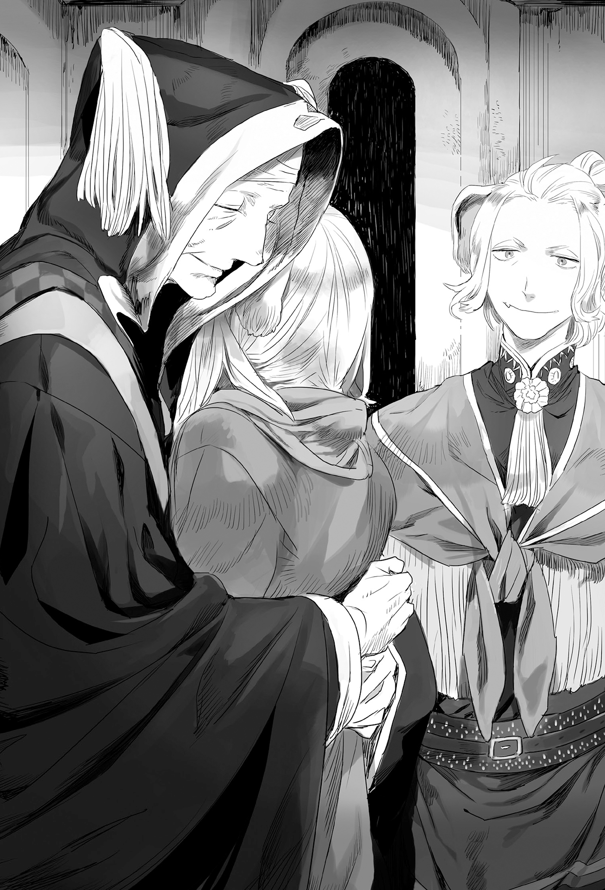

Chapter 3 – To the Beast God Shrine
.
Part 1
The route from Mauricia to Nordland had to cross over Maultenas(モールテナス) Mountains.
It was fortunate that their destination, Orebro City where the beast god shrine was located was relatively near to Mauricia.
The bad road couldn’t be called well maintained even as flattery. The carriage that Baldr and others were riding was slowly moving on it.
Fortunately, Nordland Empire’s carriage for the use of royalty was using spring and feather cushions lavishly. They were able to avoid feeling pain on their bottom from sitting in the carriage.
「Aa, Rudy is the redhead and the son of the shoemaker!」
「So you finally remember.」
Selina and Ernst were having a lively talk about the past during the journey.
As expected the memory of childhood was something that was especially beautiful for adult.
Through the passage of time, only the memory of fun times remained strongly in the memory. As people grow older, those memories felt even more special after they lost their purity and sense of liberation as an adult with ties of obligation weighing them down.
「Daniel and Rudy has married. Right now Rudy is also a mother of a child.」
「No way? Rudy was a year younger than me ain’t it?」
「Thinking of Selina’s age, it won’t be strange even if you already have a child right now.」
「U-uguu……」
The marriageable age for woman at Aurelia continent was somewhat different depending on the country, but in general it was around 18 years old.
There were also a lot of people who married at even younger age, like the villagers of poor village or conversely the upper class nobles.
Although Selina’s wish to be engaged with Baldr had come true like this, she was aware that she was almost counted as someone who married late.
「To think that Rudy is now a mom……」
In the past when she still wasn’t aware of difference between sexes, Rudy was a red haired tomboy with freckles on her face.
Selina was unable to recall even a single feminine aspect of her childhood friend, but it was exactly because of that she couldn’t help but feel out of place that her childhood friend had become a mother without her knowing about it.
「What are you saying? Even Daniel thought that Selina was a boy for a while you know?」
「What did ya say?」
Selina raised her eyebrows at those words that she couldn’t allow to pass.
「You cut your hair short at that time and you would be the first one to take off your clothes when going to the river. It’s only natural that he thought so isn’t it?」
「T-that’s only when I was a kid!」
「To be honest the only difference between Selina and a boy was that you didn’t have anything dangling between your legs. Even Rudy thought that you were a boy at first.」
「No way……how did Er-nii realize I was a girl then?」
「I had checked that you didn’t have it between your legs.」
「THIS LECHEEEERRR!」
Selina went completely red all over her body as though she had just been boiled. Her iron fist gouged into Ernst’s stomach.
「Guofuh!」
As usual, the fist didn’t feel like it came from an amateur with Selina’s whole weight mounted in it. Ernst pitched forward from the impact, but his gaze while falling was directed toward Baldr smugly.
.
(……I’ll take you on if you’re picking a fight with me!)
Baldr couldn’t help but feel jealous that Ernst was proudly talking about the past Selina that he knew nothing about.
He had been holding back himself from breaking the atmosphere because Selina looked like she was having fun, but there was no need for him to hold back if the other side was provoking him.
「Kyah!」
Baldr put his arm around Selina’s shoulders and pulled her toward him without saying anything. Then he started caressing the ears on Selina’s head lovingly.
「You also punched me when you allowed me to caress your ears at first didn’t you?」
「T-that was because Baldr tried to lick my ear! Ya moron!」
Although she was looking embarrassed, Selina too didn’t look that dissatisfied to be gently caressed like this.
「Y-you tried to lick her ears……!?」
Ernst’s jaw dropped in astonishment.
Ernst was never allowed to touch Selina’s ears even though he was her childhood friend. It was only natural because a female from beastman race would only allow their ears to be touched by someone who they had opened up their heart to.
Furthermore an advanced play like licking the ear was something that even actual husband and wife might never did for real in their whole life.
Ernst was taken by surprise that Selina and Baldr had actually progressed that far.
「……fuh」
Baldr hugged the blushing Selina who allowed her ears to be caressed by him. A smile of satisfaction was tugged on his face.
Ernst’s rivalry instinct was lit on fire seeing that smug expression.
(Very well. I accept your challenge!)
「Do you know? Selina has a small dark mole beside her belly button.」
「H-h-h-h-h-how did Er-nii know that!」
Selina reflexively covered her stomach with both her hands even though she was still clothed and her skin wasn’t exposed.
As expected, even Baldr couldn’t help but open his eyes wide in surprise by this explosive statement.
Ernst smiled with composure in enjoyment of the two’s agitation.
「Did you forget? We sometimes took a bath together in the past.」
「W-WHAT DID YOU SAAAAAAAY!」
How enviou……no, how scandalous.
Baldr himself hadn’t seen Selina’s naked body even though they were engaged. And yet this man had witnessed every single inch of it!
「What are ya sayin’ so suddenly! Stupid Er-nii! That’s only when we were just children!」
「Certainly, it’s a story before your chest grew big.」
「──Die.」
Selina’s iron fist pulverized the nose of the head that Ernst held high in pride.
Ernst obediently accepted the punch with a manly face that had accomplished a great feat.
「Kuh……I want to see it too……the naked small Selina frolicking around……」
「Forget it~~! Doncha say anymore~~~!」
「Fuh, the length of time is just different between us!」
Baldr snapped at Ernst who was laughing scornfully at him.
「Don’t think that I have only mastered the dog ears! Selina’s tail is also not at all inferior compared to her ears!」
「Whaaat! You bastard, not only her ears but even her tail!」
Ernst immediately revived even with blood flowing from his nose. He was quite a hardy man.
「The area near the base is especially sensitive. I can eat three bowls or rice without any side dish simply by watching Selina’s reaction when that spot is fiddled with.」
「I-it’s that much……!」
──*Snap*
「ENOUGH WITH THE SEXUAL HARASSMEEEEEEEEEENT!」
「「EROBAHHH!」」
.
「……Please forgive my lord’s coarseness.」
「Puh……no, no, don’t worry about it……upuh!」
Gustav and Beatrice were holding their stomach to stop themselves from bursting out laughing at the rear seat that was back to back from Baldr and the other two.
Agatha who was sitting beside them was also feeling very awkward to listen to the lovers’ quarrel behind them.
(I’m amazed they can be so brazenly doing their lovers’ quarrel in the presence of the empire’s crown prince and princess!)
Although it didn’t seem like there would be any impediment for them because Gustav and Beatrice appeared to enjoy their quarrel.
「Ernst……that obstinate person whose face was like an iron mask is……」
「Ukukuh……he said, not only her ears but even her tail!……no good……my stomach hurt……」
「Is it so funny that your highness can’t breathe from enduring your laughter?」
The two were desperately holding back their laughter. They needed more than ten minutes until they were able to recover their composure.
「……Aa, how painful. I never had a laugh this painful in my life until now.」
「I want to praise myself from not bursting into laughter at such scene.」
「Is there any need to endure until that far……」
Agatha wished they would quickly laugh and stop that comedy.
「How can we do such wasteful thing. After all we never saw Ernst acting like that even once at Nordland.」
「To be honest, I’m the one who can’t imagine Ernst-san looking expressionless like he is wearing iron mask and being popular among the ladies like that……」
Ernst was already a funny young man who proclaimed himself as Selina’s fiancée when he made his entrance before Agatha.
「Ernst is the favorite student of the empire’s knight order commander, Bjorn(ビョルン). He is at the top five in the empire when it comes to swordsmanship. He has bright future and his looks is also not bad, so he is like an idol among the low class nobles and the maids. His quiet and blunt attitude is also considered cool.」
「His bromide is also a popular product at the capital.」
「I can’t really believe it……」
Agatha sighed while looking behind her.
She looked at the figure of the man who was KO-ed by Selina with nosebleed together with Baldr. She got the feeling that there was something seriously mistaken here.
「Tsk tsk, girl’s dreams are generally occurring from misunderstanding you know?」
「That’s too blunt……」
Agatha sighed at the situation.
She wondered just who was this Ernst that the crown prince and princess were favoring him this much.
「Are you puzzled why we’re favoring Ernst like this?」
Beatrice sensitively guessed that and laughed while tilting her head.
「I’ll be lying if I claim that I’m not curious.」
「You see, I was a girl who led a sheltered life at Mauricia Kingdom. Well, to be honest I can’t laugh at the daughter of Duke Bousfield. Because I too hated beastman.」
「Beatrice, don’t say it like Nordland is a savage country.」
「I’m not thinking like that at all right now. Two different cultures aren’t something that should be compared to find which one is superior than the other.」
The two of them loved each other, but Gustav naturally had multiple concubines because of his obligation as a royalty.
Among those concubines was a beastman named Adriana(アドリアナ) who Gustav especially favored. She was actually Ernst’s elder sister.
This woman was a commoner and also an expert archer. Beatrice was extremely hostile toward her at the beginning.
「──My aide-de-camp at that time was Ernst. I already held prejudice toward him just because he is a beastman, and I even showered with insults many times. But even then he served me loyally without even a single change in his expression. Even though he should also have heard when I spoke insults to his elder sister.」
Thinking back right now, she wondered why she was acting that bigoted at that time.
Normally Beatrice should be able to keep up a mask to cover up her emotion even if she harbored disgust toward beastman.
Perhaps the stress of living far away from her homeland Mauricia was burdening Beatrice that even a tough lady like her was behaving like that.
「And yet Ernst still saved me when I almost got killed by a spy from Gartlake. He is like the very picture of sober and honest man you know? When I learned that he is the little brother of Adriana after that, it was so embarrassing it felt like fire would spout out from my face.」
Ernst’s answer was simple when he was asked why he protected her to that degree even though she was his elder sister’s enemy.
「Because your highness is the wife of Gustav-sama, the lord who I’m devoting my loyalty to.」
Personal feeling shouldn’t take priority before duty.
Beastman race had the custom that considered dying for the sake of the pack was a honor.
For Ernst, Gustav was the pack leader. It was the greatest honor to stake his life for him.
Beatrice too was included within that pack as the leader’s family. Beatrice was embarrassed but happy to learn that.
「Since then he is also a member of our family. Though he is still a man that can be favored even without including that.」
「I see, so such thing happened.」
Agatha looked once more at Ernst who was exposing a slovenly face.
Baldr was also unconscious beside him with a stupid look on his face. His defenseless expression was unbearably adorable.
Agatha thought that perhaps this was what the saying of ‘to fall in love is to lose’ meant.
Her highness Beatrice must also be looking fondly at Ernst even though it wasn’t because of romantic feeling but more like love toward family.
Agatha too understood that reasoning well.
.
Part 2
Maultenas Mountains was different from Antrim’s Morgan Mountains Cornelius’s Felbre Massif. It was a mountain range with extremely high elevation.
The mountain range stretched from east to west to separate Mauricia Kingdom and Nordland Empire from each other. Both countries could maintain a relationship that was close to being an alliance without getting into conflict with each other was largely because of such geopolitical situation.
「This is……really a superb view.」
The blue lake surface of Aleister Lake was visible at far away.
The greatness of Aleister Lake’s scale could be comprehended once more when looking down at it from the top of a mountain like this.
At the same time it was also clear to see from here just how blessed Mauricia Kingdom was with abundant water.
Ernst threw a question to Baldr.
「Is this your first time leaving Mauricia?」
「I had left the country only once when I was forced to go to Sanjuan Kingdom some time ago.」
Baldr quietly turned his gaze to the scenery below his eyes. He unconsciously recalled the indescribable hardships from that time.
「Did I say something wrong?」
「──I’ll be thankful if you don’t ask about it.」
Baldr let out a sigh ‘fuu’. His exhaled breath turned white and dispersed into the air.
As expected the temperature at this altitude was low. Selina and the others wore a warm looking shawl and blanket that was placed on their thighs.
Baldr only wore an extra jacket, but it seemed coldness was the natural enemy of woman.
「This coldness is harsh now that I have gotten used to the warmth at Cornelius.」
Selina’s ears too were lying flat on her head from the coldness. She frequently rubbed her hands on her shoulders.
「I can’t believe you were that Selina who wore short sleeves even at winter.」
「Dontcha group me together with my child self!」
From what Ernst said, it seemed that beastman race was fundamentally strong against cold.
Perhaps it couldn’t be helped even if it was said that Selina had gotten spoiled with her current life.
「Come to think of it, isn’t the area around your stomach getting fleshier recently?」
Agatha’s merciless words made Selina hid her stomach in panic.
She knew best than anyone that the size of her clothes had been getting tighter lately.
「I let my guard down! Turn a blind eye to it pleasee~~!」
.
「……How should I say it, they’re getting along well.」
It seemed like they were making fun of each other somewhat, but Beatrice thought that it was a really harmonious scene between lovers.
Compared to them, Beatrice and Gustav’s love was just too peculiar.
Perhaps it couldn’t be helped because they were born as royalty, but after being shown something like this, it made her wanted to enjoy a love with her husband without any ulterior motive like them too.
「If possible I hope they won’t ever change, but with Lord Baldr’s position, he has grown too big that no one can ignore him at Mauricia. It makes me a bit worried.」
In order for Gustav and Beatrice to marry, not only they had to convince their parents, they also had to outwit the chief vassals and other country’s royalty who were included among the fiancée candidates.
In the political strife at the future, Baldr would be asked to confront various pressures on him even if it wouldn’t be as great as what Beatrice and Gustav faced.
The greatest example of this was the problem of Baldr’s legal wife candidates that included Rachel and Silk as the most likely candidates.
No matter who he chose between the two of them, he would definitely leave behind a breeding ground for big problems in the future. Perhaps Baldr would be happier if he stayed as a mere heir of Count Cornelius like in the beginning.
「Well, I’m hoping that Rachel’s feeling will be reciprocated though. We are blood-related sisters after all, so it’s only natural isn’t it?」
「I also hope so but, her opponent is that Marquis Randolph’s daughter. It’s a problem that it might be more profitable for Lord Baldr to marry with her instead.」
Thinking of Baldr’s position as Margrave Antrim, the merit of marrying the leftover princess was simply that he would gain the prestige as royalty from that.
A feudal lord like Baldr didn’t have the option of achieving success as bureaucrat within the royal court.
Welkin was fundamentally a fair king (excluding his hobby to bully his favorite retainers), he also wasn’t lacking male heirs to succeed after him, so the merit of Baldr becoming his relative was few.
Rather Randolph House that was holding the rights in regard to the matter of Trystovy would yield greater profit to Baldr. Having pipeline to Trystovy would be very helpful to Savaran Company that was very close to Baldr.
For Nordland Empire, it would be preferable for Baldr to marry Beatrice’s little sister. With that they would have connection with the new margrave at the south.
Gustav and Beatrice watched the love triangle that was centered around Selina which was still continuing even now. It reminded them of the old days and they joined hands with their fingers entangled with each other.
.
There was a deep valley when they started to descend the mountain range. It was like the mountain was gouged to form this valley.
That place was called Tarfala Valley. That place became a huge river that flowed into the plain and also moistened the land of Nordland.
This Tarfala River was the only large river in Nordland that boasted abundant water amount. The bases of iron manufacturing and metallurgy that were the major industries at Nordland were mostly located at the coast of this river.
「We will be able to increase the cultivated lands if only we can develop ponds that can store vast amount of melted snow.」
Unfortunately Nordland that was still in conflict with Gartlake didn’t have ample fund for such project. They only had a small stockpile of water for emergency use at Lebel(レベル) Village.
Military expense was always high with low productivity no matter the world.
Gustav couldn’t help but feeling irritation because he knew that the water level would increase at spring when the snow melted and yet there was nothing that he could do.
Beatrice sighed.
「Sometimes it make me want to doubt whether those people continue the war just because they want the budget and promotion to keep coming their way……」
Gartlake Kingdom was actually a nation that declared independence and separated from Nordland Empire.
At the founding of Nordland Empire, the first prince of Nordland fell in love with a local girl while in a military campaign and became the first generation king Frederich I.
Annoyingly this prince got defeated at the struggle for inheriting the crown and he extremely hated his little brother the second prince. Because of that he founded Gartlake Kingdom and started invading into Nordland Empire.
Even now Gartlake royal family was claiming that they were the true emperor of Nordland.
Of course Nordland Empire didn’t recognize that claim. And so the dispute between the two countries continued without any hope of compromise.
A lot of sacrifices and vast amount of military expenses had been consumed by the war. Both countries couldn’t possibly go ‘as expected this war is wrong’ at this point of time.
Even so Gustav was thinking that even continuing this pointless war of attrition would soon reach its limit.
Both Nordland and Gartlake weren’t wealthy countries by any means.
There should be some factions among them that wanted both countries to have peaceful relationships to curb the pointless expenses.
However the influence of military within Nordland was great. Even with the influence of Gustav as the next emperor, it was next-to-impossible to ask their cooperation for peace.
「I need Ernst to do his best, for the sake of the future too.」
If Ernst who was deeply loyal to him could reach high position within the military, it wouldn’t be so unrealistic for Gustav to carry out his policy.
Beastman race had strong influence within the military, but the problem was that their loyalty was earnestly directed toward the current king, Adolf IV.
Beastman like Ernst who swore his loyalty to Gustav personally was precious.
Gustav wasn’t favoring Ernst just simply because he was an adorable subordinate.
「If possible, I hope this problem won’t leave an unnecessary scar in him.」
Orebro was close by after descending Tarfala River and crossed Mazmott Bridge.
Gustav couldn’t help but wishing that while looking at Ernst who was pointing with a smile at the beast god shrine that started to become visible at far distance and Selina, and also Baldr who was trying to tear apart the two of them at the background like usual.
.
Part 3
Orebro was a typical mining city. It refined the iron ore that was mined from Maultenas Mountains using the plentiful forest resources and water around it.
High-pitched hammering sounds resounded from here and there. Various merchandises made from iron were lined up at the display of the storefronts.
Selina’s father Massoud visited this Orebro City to obtain those iron products.
「This is amazing. I even want to invite several of them to Antrim.」
Actually the metallurgy skill not just at Antrim, but at Mauricia Kingdom on the whole wasn’t that high. They were forced to import if they wanted products with high quality. That was the present state of affairs.
「It’s the prized technology of our country, so please don’t.」
「I know that’s the case──」
For Nordland Empire that was poor in agricultural produce, mineral resources and iron manufacturing were their precious source of income. They wouldn’t even consider to let those things leaked out to the outside so easily.
「……I think, I might remember somethin’.」
The heat of blacksmith’s workshop that spilled out until the street.
The slightly sooty townscape with solemn atmosphere that prioritized functionality.
Human and beastman children were playing tag with happy smile at the city’s square.
That scenery seemed to stimulate the memory that was buried deep in Selina’s mind.
She felt like she had also run around playing tag over there.
If they got out of the city from the east, there was an irrigation channel for drawing water from Tarfala River there. It was a great spot for children to play in water.
The scene of her playing around with Er-nii and Daniel and Rudy when they were children was resurrected in her mind.
The blurry and hazy images in Selina’s mind were finally starting to connect like puzzle pieces. It was then,
「Er-nii, when did you return?」
That voice was softer and calmer than in Selina’s memory, but the peculiar intonation that she was almost forgetting was still like in the past.
「Rudy! Ain’t ya Rudy?」
The short red hair that grew until below the shoulder and the curve that had round trace of femininity were giving sex appeal to the woman who had become a wife.
Even so, her lively joviality was still going strong like when they were children.
「──Ee~rr, who?」
Unfortunately it seemed that the moving reunion failed to manifest.
Rudy was tilting her head cutely while her hand was pulling the hand of an adorable little girl who seemed to be her daughter.
「You don’t recognize her? She is someone who often played with us in the past.」
Ernst made a teasing smile.
Rudy groaned ‘mumumu’ at that provocation……she fell deep into thought.
The daughter also folded her arms and tilted her head seeing her mother’s strange gesture.
The two of them pondered for a while like that, but it seemed Rudy failed to find the right answer no matter how deep she traced her memory.
「She isn’t Anita and there is no way she is Barbara……is she really my acquaintance?」
「That’s horrible! It’s me! I’m Selina!」
「Haa? You are that wild monkey Selinaaa? You’re lying right?」
「W-what are ya saying! Who are ya calling a wild monkey huh!?」
Ernst who was listening to Rudy and Selinas’s conversation couldn’t hold back anymore and burst into laughter loudly while holding his stomach.
「Ku-ku-ku……you might be unable to believe it but, she is really Selina. She has really changed right?」
「Hee……so she is really that Selina who was number one in tree climbing and often painted her face pitch black……」
「Stop talkin’ about the past! I also haven’t forgotten how Rudy splashed yer pee at Er-nii!」
「……Mama, you splashed your pee around?」
Rudy turned bright red until her neck at the unexpected retort from her daughter. She waved around her hands in panic and denied it.
「T-t-t-there is no way I ever did something like that. Stop making things up Selina.」
Exposing each other’s dark history was an unproductive act.
Selina and Rudy nodded at each other and agreed to a ceasefire.
「I’m shocked……I can’t criticize Er-nii anymore like this. I never thought that Selina would become this kind of beauty.」
「Why did ya criticize Er-nii?」
「What are you saying! Do you know how many girls were crying when they heard that Er-nii is engaged with you!?」
The number of girls who were secretly harboring feeling toward Ernst couldn’t be counted with both hands. And those were only the girls that Rudy knew about.
Because that fiancée was Selina who was known as a wild monkey, the girls who got rejected felt blazing resentment that they had nowhere to vent to.
If Selina’s mother wasn’t sick and she never stopped coming to Nordland, there was no doubt that she would find a carnage waiting for her here.
「Fueeee?」
Selina’s cheeks blushed red. The nostalgia about the past had made her forgot that Er-nii was proposing to her.
「No one will be able to complain if they see how pretty you have become. To think that Selina would transform this drastically……」
「Rude! Even I am a woman!」
「Well, I’ve to admit that Er-nii really has good eyes.」
It seemed that Rudy was completely under the impression that Ernst and Selina were married.
「Did you come to report to Auntie Liselina?」
「……Whaddya mean?」
For Selina who had only remembered about her lively and caring aunt not long ago, she certainly wanted to meet her and asked her about many things like the stories of her departed mother, but there was nothing that she needed to report to her.
「Eh? Because you came to report your marriage with Er-nii to auntie right?」
「Heh?」
Selina noticed that there was a definite difference in perception between them when Rudy asked her that with a serious expression.
「No no, my husband is Baldr here!」
Rudy spontaneously stared at Baldr from his head until his toes. Then she spoke with a rough voice in disbelief.
「No way! How can that be, you’re saying that you aren’t married with Er-nii but with this spindly effeminate man?」
Baldr asked himself whether he really still looked spindly and effeminate.
Baldr felt refreshed instead hearing an evaluation that was completely lacking in reservation after so long, but Selina on the other hand squared up her shoulders in fury.
「Wait……how can ya say that about my husband! He is cooler than Er-nii no matter where ya look at him from!」
「Because when you were still a kid, you were always going Er-nii, Er-nii and clung on Er-nii everywhere. You even bawled loudly when it was time for your father to go home you know? It’s strange to say this but, I can’t remember you calling my name or Daniel’s name even once in my memory.」
Selina’s throat was jammed when her embarrassing past was exposed.
She didn’t have any way to object at all because it was true that she had completely forgotten about Rudy and Daniel until they actually reunited.
「I’m totally in love with Baldr right now!」
She should show with her action if she couldn’t win with words. And so Selina hugged Baldr and raised her voice in objection.
Baldr’s expression softened because of Selina’s laudable action and his hand caressed Selina’s smooth dog ears.
「Wait, who in the world are you? Are you perhaps tricking Selina?」
Rudy pointed at Baldr with her index finger. Her expression was grim. Baldr smiled wryly.
Unexpectedly, it seemed she thought that he was an effeminate man who seduced the pure Selina.
「My name is Baldr Antrim Cornelius, Margrave Antrim of Mauricia Kingdom. It seems that you have taken a great care of Selina in the past.」
「W-what? Margrave? Are you making fun of me because you think that I’m a country bumpkin?」
Rudy was visibly flustered when a title that she never even expected came out in the talk.
The feudal lord of Orebro was Baron Orebro while a margrave far surpassed that. Even Rudy knew that much.
From what she knew, Selina should be just a commoner.
She didn’t have the status that could allow her to marry with a margrave even in error. Furthermore she wasn’t a human but a beastman.
「Aa~~, Rudy. I understand well that you must be confused, but he is saying the truth. He is coming here by the invitation of my master his highness Gustav the crown prince. He is undoubtedly a lord margrave.」
「EEEEEEEEEEEEEEEEEEEEEE!?」
It was nobody else but Ernst who confirmed Baldr’s words. Rudy’s mind fell into panic.
A commoner like her had called a margrave an effeminate man, spindly, and a marriage swindler. It was only natural that she couldn’t keep her composure.
「M-m-my deepest apologies!」
「I don’t mind. If you’re a friend of Selina then you are also a friend of mine.」
「Y-y-y-your kind words are wasted on me!」
Rudy bowed deeply before she took another look at Baldr.
He had refined facial features although not to the degree of Ernst and the outfit he was wearing was certainly giving off elegance and stylishness that were more fitting for noble rather than wealthy merchant.
If he didn’t claim that he was Selina’s fiancée, then even Rudy might be able to notice that Baldr was a noble right from the start.
「W-why is Selina marrying with an eminent noble……A-Auntie Liselina~~~~!」
Before she finished speaking, Rudy turned around and sprinted back the road she came from like a startled hare.
Baldr and Selina were unable to react right away.
「That girl……her habit to rely on Auntie Liselina when she is troubled is still not fixed……」
Ernst sighed.
「Even so, was Rudy someone who easily got into misunderstandin’ like that?」
Selina was puzzled by the unexpected reaction of her childhood friend that she hadn’t met for a long time. Her impression of Rudy was of a quiet girl who hid behind Daniel.
「She has calmed down since she got a daughter, but she has been easy to misunderstand like that since the past. After all she got Daniel to fall for her with that determination of hers.」
Rudy declared that she would become Daniel’s wife when she was four years old.
Since then, Rudy kept devoting herself to take care of Rudy without ever doubting her childish feeling of love. She was also chasing off her rivals behind the scene and splendidly gained the seat of Daniel’s wife.
「Y-ya can’t really judge people by appearance huh.」
「Forget about that. Let’s head to Auntie Liselina’s place quickly. It’ll be troublesome if that person run wild.」
「Is Auntie Liselina a scary person?」
Selina’s memory wasn’t clear at all. Ernst turned an exasperated gaze at her.
「She is my sword instructor! When she was at her prime, even the current me wouldn’t be Auntie Liselina’s match at all!」
「E-even though she is my mom’s big sis!?」
「You really don’t know anything huh. Excellent warriors have turned out in great number from Auntie Liselina’s Bjorck House for generations. They are a noted family even among the beastman race.」
「Hieeeeh!」
Selina’s memory of her mother Lilia was of a fair skinned woman with weak constitution. She never even dreamed that her sickly mother came from such lineage.
「Didn’t your father teach you anything?」
「──Pop was like a completely different person since mom got bedridden……」
Ernst realized that his words had gouged a deep part in Selina’s heart and bowed his head.
「Sorry, I said something unnecessary.」
「Dontcha mind it! It’s all in the past.」
「Anyway let’s hurry! If we’re unlucky this place might turn into a battlefield.」
And so Baldr and group separated from Gustav to hurry ahead to the shrine. They followed the path Rudy was running off to.
.
Part 4
Liselina’s house was located slightly to the east from the center of Orebro.
The house’s structure was extremely plain, but the size of its grounds far surpassed what was normal for a commoner town.
The reason for that was because as a military family, Bjorck(ビョルク) House would gather the youths from the neighborhood and gave them martial art instruction.
When Liselina participated in a war, she defeated an enemy general called Torgis(トールギス) after a fierce battle and the proposed him for marriage in the battlefield. There was nobody in Orebro who didn’t know about that anecdote.
Right now Torgis had completely become a middle-aged fat uncle. Liselina retired from the frontline together with him and now she was giving instruction to the next generation in this Orebro.
Even now there were still many people who thought that her skill was wasted in her current role, her former subordinates who now had obtained success at the imperial capital also formed an association of Liselina’s disciple there. It was a secret that Ernst was actually a member of that association.
Today too she was swinging her sword in front of the children.
「Are you all listening? Don’t try to swing your arms. Drop your waist together with the sword and focus to put your whole weight into the sword tip. If you do that……」
The sword on Liselina’s hip flashed horizontally.
In the children’s eyes, it looked like Liselina’s sword had been drawn out when they noticed.
However at the next moment, the log that was placed in front of Liselina was split into three and fell on the ground.
Liselina had swung her sword three times in that single instant.
The children all burst into cheers when they realized that.
「First swing your sword a hundred times. Those who swing listlessly will get this wooden sword shoved up their ass!」
「Y-yes!」
The disciples who had experienced Liselina’s hard training every day were aware that her words weren’t a mere threat or joke.
If any child in this neighborhood was told by their parent that they would ask Liselina to scold them, even a crying child would stop crying.
Liselina narrowed her eyes fondly in an unnoticeable way seeing the children desperately swinging their sword.
The earnestness of young boys working hard to become strong was beautiful and adorable no matter how many times she had been watching it. Liselina would never get bored watching this.
(Well, it’s unfortunate though that I can’t witness outstanding talent like Ernst or that monster in the past really often.)
Among the disciples that Liselina had taught, Ernst might be the man who would become the strongest of them all. His talent had stood out above the rest since he began training at five years old.
She wanted to teach such outstanding talent once more. Was such wish really too luxurious to be granted?
The familiar scream of Rudy broke the daydream of Liselina.
「Auntie Liselina~~! Selina is……Selina is!」
「Selina?」
Liselina spontaneously doubted her ears.
Liselina had always felt worried about the daughter of her little sister Lilia who was sickly and suffered from an incurable disease.
Unfortunately her brother-in-law Massoud was in the business of peddling. There was no more news from him since he last changed residence.
Could it be that Selina was visiting here? If by some chance Lilia’s sickness was cured──.
Selina was unable to stand still after thinking that. She broke out into a run to the direction from where Rudy’s voice came from.
Rudy was running with gasping breath around a hundred meter ahead of the road.
Liselina closed that distance in less than several seconds. She grabbed Rudy’s shoulders and shook her fiercely.
「Where is Selina? Was she alone? Was there a woman who look similar with me beside her?」
「A-a-a, Auntie Liselina……if you shake me like this my eyes will……kyopipipipipipipi」
「M-my bad……」
Rudy was already running out of breath after sprinting with all her strength. Her eyes were rolling around after getting her head shaken in high speed that she tumbled down face up.
Perhaps the two of them were similar to each other in a sense.
.
「Fuu……that was horrible auntie……」
Rudy finally managed to come back to herself and turned a resentful gaze at Liselina.
「I told you I’m sorry. Forget about it already, what were you going to say about Selina?」
Although she was looking guilty, Liselina turned completely defiant and questioned Rudy fiercely.
This talk was also about her little sister who she thought she would never meet again.
「Fueh? T-that’s right! This is serious! Selina has become the mistress of a big shot noble, a margrave or something──」
It was a disaster that the word concubine couldn’t become the first word to come up in Rudy’s mind.
No, perhaps Liselina’s reaction would still be the same even if she said the word concubine.
「Aaa~~a? I don’t know who the hell this guy is, but how dare he treat my niece lightly like that……」
Perhaps Selina had sold her body because the cost of Lilia’s treatment pushed them into a heavy debt. And then this licentious margrave might have done this and that, and perhaps even tha~at kind of thing!
「Where? Where are Selina and that bastard noble-!?」
Liselina had completely entered battle mode. Rudy finally realized that she might have messed up after seeing that.
However there was no one in this Orebro who was able to stop Liselina after her blood had rushed into her head like this.
The only salvation to be had was that Ernst was fortunately present in this city.
「Hawawa……they were about to walk out of the blacksmith district into Berth Square……I think.」
「Selina! I’ll save you right now!」
Liselina turned into a gust of wind that ran off to far distance away in the blink of eye. Rudy whispered the rest of her explanation too lately.
「It looked like Selina was deeply in love with that noble. From what I saw, it was mutual love……though.」
Rudy looked up to the sky with a dry laugh and prayed to the heaven.
She prayed for the happiness of Selina and her husband.
.
「W-what? What’s this quake?」
「Shit! We’re too late! Get ready! She’s coming!」
Liselina who had transformed into a demon was approaching like a wind. Baldr noticed that and hurriedly took a combat stance.
「Hiih!」
The bloodcurdling fighting spirit of Liselina made Selina hid herself behind Baldr in panic.
Liselina completely misunderstood the meaning of Selina’s look of terror.
「SO YOU’RE THE BASTARD WHO TORMENTED SELINAAAAAA-!」
「Who the hell is this moron-!」
Liselina crouched and gathered strength in both her legs before leaping with a terrifying speed.
However Baldr who was used to Maggot’s godspeed shifted the axis of his body for 30 degree without panicking. He made use of Liselina’s rushing momentum to throw her away instead.
「What-?」
It was like her target disappeared from before her eyes, then before she realized it she had been thrown away high in the air. Liselina finally came back to her senses when she realized that.
And then she understood from her experiences fighting many strong people until now.
That Baldr was an opponent that couldn’t be underestimated.
「……Hm?」
Liselina half rotated midair and landed. She suddenly felt a sense of discomfort when she saw Baldr.
「Auntie Liselina! This person is……」
Liselina ignored Ernst who tried to solve the misunderstanding and stared fixedly at Baldr.
She wondered what was this out of place feeling. It felt like she had met this young boy somewhere.
Before she realized it, her raging hostility toward Baldr had vanished.
「……Strange……could it be your grandfather or grandmother is a beastman? It might offend you as a noble but, there is an atmosphere of beastman from you.」
Liselina’s nose sniffed Baldr’s scent. Baldr shrugged in embarrassment.
What was this embarrassment play?
「Now that auntie mention it, I’m also getting some kind of feeling but……even if say that he has beastman blood in him, I can’t really see it.」
Ernst tilted his head several times dubiously.
「Hmm~~……rather than a beastman……his presence is similar with grandmother……」
「With the head priestess?」
It seemed that Ernst and Liselina understood what each other meant, but Baldr and Selina were completely left behind.
「……So, she is Selina’s aunt?」
「I think so. Her eyes and lips are similar with mom.」
Her body style was completely different though, Selina almost added. But Selina swallowed those words back because her instinct was telling her of the danger.
It didn’t matter whether it was with a wife or a warrior, the topic of weight was forbidden for any woman.
The whispers between Baldr and Selina must have entered Liselina’s ears.
「Is that girl over there Selina? You have grown really beautiful! Though your face look more like your father.」
Selina had almond-shaped eyes and sharp look. But Liselina had a round baby face.
Surely Selina’s mother was also a lovely woman like this, excluding her body weight and style.
「If you have any objection then I don’t mind even if we have a duel to the death right here you know?」
「I have nothing to say, ma’am!」
Man could only shut up when woman glared at them with cold gaze and expression that was like hannya.
No, Baldr didn’t mean to look down on Liselina at all. Large body that was thoroughly trained like Zirco should be looked at with admiration if one was a warrior.
「──Auntie Liselina? Sorry, but my memory is vague──」
「Don’t mind the small things! It’s already a matter for great congratulation just to have my niece show up like this!」
Liselina slapped Selina’s back so energetically that Selina’s face grimaced in pain.
「Auntie, I’m just a normal civilian so hold back yer strength!」
「What, you are really frail aren’t you……」
Liselina had a wide smile on her face even while saying that. She was extremely happy to be able to be reunited with the daughter of her cute little sister whose whereabouts was unknown all this time.
「So, you are Selina’s companion?」
「My name is Margrave Baldr Antrim Cornelius, Aunt Liselina.」
「You have no right calling me aunt!」
Liselina stared at Baldr with a gaze of suspicion. She flatly rejected the two’s relationship.
Certainly, it couldn’t be helped for her to think that Selina was treated as mistress or slave if a commoner like Selina brought a noble as her husband.
Selina got offended by the hostility that Liselina displayed and she objected.
「It’s decided that my husband is Baldr, no matter what auntie is sayin’!」
Liselina finally accepted that her niece wasn’t forced into relationship with Baldr seeing how Selina was seriously angry at the situation.
「I won’t object if that’s what Selina say. Well, I myself is hoping that you’ll marry with this Ernst boy and return back here though.」
「Auntie, please stop calling me boy already……」
「I’ll stop calling you boy after you marry.」
There were both gentleness and brusqueness in her rough tone.
Baldr suddenly realized the reason why he wasn’t feeling really irritated despite the relatively horrible treatment that he received.
(In short, this person is similar with Kaa-san.)
Baldr told himself that he absolutely mustn’t turn this woman into enemy.
「We shouldn’t keep standing here, let’s talk at my home.」
「Forgive me auntie. We have to go to the shrine after this. His highness the crown prince is also waiting for us over there.」
「Tell me that quicker! You have become a real hot shot huh boy, to dare making his highness waiting like this!」
「We wouldn’t even need to make his highness wait if only auntie could be calm.」
「……You have become really a master at talking back huh.」
Liselina and Ernst laughed daringly at each other.
Selina raised her voice brightly more than necessary to dispel the tension that was rising once more.
「C-come on ya two, show us the way to the shrine already. We don’t know the way around here.」
.
Part 5
Selina talked about her parents while heading toward the beast god shrine.
「──I see, so that idiot husband died together with Lilia.」
「Yes.」
「That man was really thoughtless. How could he die and leave behind his cute daughter alone. Though those couple had been so in love with each other that they made the people around them to be awkward instead.」
Liselina’s expression was depressed even though she was saying that.
The conflict she felt toward her little sister who lived together with her when they were children, and the human man who took away that little sister from home──a sepia colored memory was resurrected in her mind.
Massoud who was a human peddler and Lilia who was a beastman met in this Orebro.
Both of them fell in love with each other at first sight.
The love between a peddler who traveled throughout the continent and a beastman who had weak constitution was naturally opposed fiercely by their surrounding.
Liselina herself also admonished her little sister over and over so that she gave up.
「Nee-san you blockhead!」
Lilia was an obedient daughter who almost never disobeyed her family, but that was the only time she was resisting and even raised her voice.
In the end her family was forced to surrender in front of the stubborn will of Lilia who was usually a mild-mannered lady.
「I’ll kill you if you make Lilia cry. You get it? I’ll go to kill you for sure no matter where you hide in this continent!」
Liselina said that to threaten Massoud.
She couldn’t forgive him for dying and leaving behind Selina, but she could at least recognize that he had fulfilled his minimum duty as a husband to Lilia.
Besides Massoud had been buried under a grave since a long time ago. She couldn’t go to kill him even if she wanted to.
The orphan that they left behind, Selina was the last proof that Lilia had once lived in this world.
「By the way Selina, it’s not like it has to be Ernst, but don’t you have any plan to marry with a fellow beastman and stay here?」
「Geez! Ya are really persistent auntie!」
「Or rather, isn’t it horrible that you’re alright even if it isn’t me?」
「Hmph! Even this engagement with Ernst can’t be annulled unless grandmother recognize it just so you know!」
Liselina recalled Gina, her grandmother and also the head priestess of the beast god shrine, then she stared at Baldr once more.
They were similar just as she thought.
She also felt like their looks were somewhat similar. Especially Baldr’s eyes that felt like they were sucking her in, it was very similar with her grandmother.
And most of all was this strange sensation she felt from him. Something that was like a pressure, like a refreshing wind, or perhaps like ghastly aura that only a handful of warrior possessed.
(Even though he is just a human male with slightly nice appearance……)
His body was well trained, but it wasn’t something at the level that astonished her.
Even so Liselina didn’t have the slightest doubt that Baldr was terrifyingly strong.
However she was unable to gauge just how strong he actually was. That aspect was also similar with her grandmother.
「……Is your race really not beastman race?」
「My father and grandparents from his side are from house of count in Mauricia Kingdom, but I don’t know about the grandparents from my mother’s side……. However my mother is without a doubt human.」
「Your mother isn’t a noble?」
「She worked as mercenary for a long time, so her family background is unknown.」
(Though she might be a princess from a dead country……)
「Mauricia Kingdom is a more flexible country than I thought. I can’t believe that a mercenary can become a count’s legal wife.」
「No no, it’s only my mother who is special!」
Ignis was the only noble throughout the whole Mauricia who would marry with a mercenary.
Well, Baldr himself was also quite special in his own way, seeing how he was married with a maid and a company’s president.
「Strange……perhaps my instinct has dulled.」
Liselina looked like she was still not convinced. She kept muttering to herself.
「Well, we might understand something after meeting with grandmother……」
It seemed that Liselina still hadn’t given up her theory that Baldr=beastman.
While they were having such talk, the beast god shrine that was located at the center of the city came into their view.
.
Orebro’s beast god shrine was deifying the Beast God Zoras. This shrine along with Altmunt(アルトムント) Temple at Gartlake Kingdom were called as the Twin Jewel of the Continent.
It was inferior compared to the main grand sanctuary of the biggest religion in the continent, Europa faith that was located at their own independent small country, but this shrine had a majestic appearance that was unsuitable for a structure built in a provincial city that was near to the border.
This temple had a huge bronze status of beastman’s originator hero Brocas. Its size actually reached ten meters. This statue was created by the blacksmiths of Orebro using all the skills in their possession. It stole Baldr’s attention and he couldn’t stop his jaw from dropping.
「Selina, do you remember this place?」
「Yes, I remember this statue of Brocas-sama. I still can’t remember the shrine though.」
It was said that the hero Brocas possessed superhuman strength from the divine protection that he received from the Beast God Zoras. With it he founded a kingdom of beastman race at the northern land. The record of that history could be seen here and there in the history books of various countries even now.
However the hero wasn’t blessed with a successor. The kingdom immediately split after his death and it was utterly destroyed. Since then the beastman race was unable to have a country of their own.
The discrimination and persecution toward beastman race in the continent along with the destruction of their kingdom divided beastman race into several factions and they scattered to everywhere.
And yet even with that, Orebro Shrine still maintained a strong influence as a base of beastman race’s unity and faith.
「This is Liselina! Is grandmother here?」
「Please wait. The head priestess is in the middle of conversation with his highness the crown prince in another room.」
Liselina barged inside as though she was entering a home of someone she was thoroughly familiar with. A priest placed himself on her way to stop her from going further inside.
It was clear just how often Liselina had troubled the people here. Ernst was directing an exasperated gaze at Liselina.
「Auntie, his majesty is also here. You should be more reserved……」
「W-what! Even I understand that much!」
Liselina had some awareness that she was being criticized and fell silent with a red face.
「──Liselina, it looks like you still can’t grow up from being a young girl no matter how old you have become huh.」
「Grandmother!」
Before long a voice that sounded relatively youthful for being Liselina’s grandmother entered their ears.
The head priestess appeared with Gustav standing behind her as though he was the one with the lower position in this place. Baldr gazed at wonderment at the figure of the head priestess.
Her white hair and the wrinkles engraved on her skin indicated how old she was, and yet her straight back and her well trained slender limbs could allow her to pass herself as a woman who was still in her forty.
The warrior aura that was emitted from her whole body reminded Baldr of another woman who he knew very well.
Yes, this woman had a very similar presence with that Maggot.
「Selina, do you remember me?」
Gina caressed Selina’s head lovingly.
The last time she met with this great grandson of her was at her engagement ritual with Ernst.
Selina had similar look with her father, but there was a trace of Lilia in her nose and jaw’s line. Gina felt moved to see that and embraced Selina into her hug.
Selina wasn’t petite by all means, but she was settled snugly onto Gina’s chest because Gina was a woman with a large build just like Liselina.

「……Onee-chan?」
「Yes, that’s right. I’m Gina-oneechan.」
The memory of her calling Gina ‘Obaa-chan’ at the shrine in the past and getting scolded 「I’m still not that old! Call me Onee-chan」 was resurrected in Selina’s mind.
「Grandmother, there is a limit even in being pretentious……」
Gina’s age had already passed 80. Even in the past when Selina was still small, her age was already at the latter half of her 60.
As expected it was an extreme deflation of her age to make someone else calling herself Onee-chan at her age. Liselina turned a criticizing gaze at her grandmother.
「Shut up. Woman always want to look young no matter how old they have become!」
No, even then getting called Onee-chan at eighty years old was still too much.
Everyone there made such retort in their heart, but they wisely shut their mouth. No, they were unable to open their mouth before her pressure.
「And, is that boy over there the man who want to become Selina’s husband?」
Gina said that while letting Selina go. She fixed her gaze on Baldr appraisingly.
Selina sensed that it would be difficult to annul the engagement if Baldr didn’t measure up to Gina’s measurement. She unconsciously grasped Baldr’s left arm tightly.
「……Interesting.」
Gina stared at Baldr for a while before she whispered in amusement. Her expression was filled with a mysterious nostalgia, like someone who discovered a nostalgic toy from her childhood.
「Endure it for a bit.」
And then Gina casually reached out with her hand and her palm pressed on Baldr’s solar plexus.
──The next moment.
Baldr felt something like a heat wave rushed from his solar plexus to his spinal cord. He unconsciously grimaced from that feeling of pressure.
It was different from the feeling of sending mana to all his nerves to strengthen his body with magic. It felt like something more different was prying open his nerves forcefully.
「As I thought.」
Gina sounded like she understood something and asked.
「Boy, are you familiar with the name Marguerite?」
「──I’m familiar with that name. Actually I’m looking for that person. Where did head priestess hear that name from?」
Baldr suppressed his impulse to scream and asked back calmly.
If the Marguerite that Gina referred to was the same with the person that Baldr thought──the princess of Trystovy, then this was an outrageous coincidence.
If there wasn’t Selina’s problem right now, Baldr intended to interrogate his mother who seemed to be this person in question.
「MARGUERITE YOU SAYYYYYYY?」
It was Liselina who shrieked with a hysteric voice.
「Oi, boy! Where is that woman right now? Where the hell is she and what has she been doing until now!?」
Liselina grabbed Baldr’s shoulders and shook him fiercely. Her expression turned bloodcurdling once more.
Just what had happened between her and Marguerite?
「I have never won against her. I won’t accept her running away with her win like this!」
「What a troubling granddaughter you are. Just who are you taking after……」
Gina lightly pulled at Liselina’s collar. It didn’t look like she put too much strength into that, but Liselina’s hands moved to her throat as though she was choked from getting pulled by a heavy machinery.
「Calm down. This boy said that he is also looking for her.」
「Gofuh, gohoh! Grandmother, be a little bit more careful with your handling to your cute granddaughter……」
A shiver ran up Baldr’s back.
She easily restrained Liselina who was Ernst’s teacher. It was a display of absurd body strengthening to reinforce her body that was already in such old age to such terrifying degree.
That power which was hidden underneath her casual gesture was similar to Maggot. It was a natural disposition that was impossible to be reached with human effort.
(……As I thought, it’s like that……)
Gina too guessed whose figure Baldr was seeing from her.
In that case, Baldr’s true identity was──.
「The head priestess know about Marguerite?」
It wasn’t just Baldr who was shocked by Gina and Liselina’s statement.
Gustav also heard the story at the palace of Mauricia. He couldn’t help but feel interested with Marguerite’s existence.
Also, if Trystovy’s princess was in contact with the beastman race of Nordland Empire, that would be a problem that was related to the guarantee of her security in a different sense.
「About that, I don’t know if the Marguerite that your highness mean is the same with the Marguerite who I know.」
Gina chuckled.
「The Marguerite that I meant is an important person of a certain country and her age is likely around 40 years old right now. How about the Marguerite that is head priestess’s acquaintance?」
Gustav asked vigorously, but Gina only warded off his interest with a light smile.
「The Marguerite who I know is a fellow beastman. I never heard about her being an important person from some other country.」
「Mu……so she is a beastman.」
Gustav frowned broodingly.
In that case, the possibility of these two Marguerite being the same Marguerite was extremely low. After all the other Marguerite was a princess of Trystovy Kingdom.
Such prejudice was small in Nordland and Gartlake, but he never even heard of the blood of beastman entering the blood of royal family at the southern major countries.
Marguerite’s mother Dahlia was also the eldest daughter of a noted house of count with long history.
Gustav naturally concluded like that with his common sense as a royalty, but Baldr’s thinking was different.
His thought was only based on instinct.
But the biggest factor was that the aura he sensed from Gina was too similar with Maggot’s aura.
However, Baldr couldn’t imagine at all what kind of interaction Maggot could have with a head priestess of a beast god shrine whose age had gone over 80.
「There is no way the Marguerite that we know is such exaggerated character! I want to see it myself if there is a noble lady who is like a bloodthirsty wolf like her!」
「I think that you too can’t speak like that about someone else though.」
Gina chided the barking Liselina.
「I’m not as barbarous as that woman who beat up others indiscriminately!」
「And yet you got along really well with her despite that.」
「There’s no way I got along with her! We were just fighting! Grandmother should know that too!」
Liselina was in indignation with bright red face. She looked more like a young girl rather than a mother who was already at mature age.
「It felt like you were just getting chased around one-sidedly without being able to win though……」
「It was only grandmother who could win against her so it couldn’t be helped!」
「Eh……?」
Ernst had been staying quiet until now in deference to Gustav. But those words just now made him reacted.
「Is it true that head priestess was the only one who could win against her?」
「This me couldn’t win against her you know! Both Gitze(ギッツェ) and Aaron(アーロン) were also not any match against her.」
「Seriously……」
Gustav groaned with a pale face.
Gitze was currently the inspector general of Nordland Empire’s cavalry general. Aaron was the commander of border defense. They were people whose individual valor was known even until another country.
If there was really someone who could beat the two of them then Gustav wanted to recruit her by all means. Even if her age was around Liselina’s age, it was still within permissible range if she had that much martial skill.
「Head priestess, where can I find that Miss Marguerite? If she has the desire to enter the service of our country then I can prepare a befitting position for her……」
Gina(ジーナ) shook her head to calm down the excited Gustav.
「We haven’t met her anymore for more than twenty years. I don’t know where she is right now.」
「Is that so……that’s regrettable.」
Even so Gustav didn’t look like he had given up from the way he groaned.
Gustav was the heir of this empire. He had the ambition to bring this conflict with Gartlake to an end no matter what kind of method he had to use when he ascended to the throne. In order to realize his ambition, he couldn’t have too many talented personnel in his employ.
If there was someone with military prowess at a level that approached Gina, then he wanted to obtain such person desperately.
「……From the way everyone talk, I take it to mean that head priestess is the strongest person among the entire beastman race?」
It was something that was hard to believe so suddenly for Baldr.
Gina should be at her sixty if it was an event of nearly twenty years ago.
Although it wasn’t unusual for military officer to still serve as active general even at their sixty, Baldr never heard of any human who could still maintain their position as the strongest even at that age.
「Why are you asking something that obvious?」
Ernst asked back at Baldr with an expression that looked astonished from the bottom of his heart.
「Gina-sama is none other than the strongest god of war of our Nordland Empire. Her strength hasn’t declined even now. Have you never heard about the name 『Thunder of Helsing』 at Mauricia?」
「Thunder of Helsing……that story about a lone person crushing a regiment and taking down three fortresses alone……that wasn’t an urban legend!?」
Although it was a history of other country, the name of the Thunder of Helsing was so famous it even came up in the class of Mauricia’s knight academy.
More than thirty years ago, the defense line of the empire’s border had a large hole opened in it due to Gartlake Kingdom’s surprise attack. Furthermore even when they tried to fill that hole, the troops necessary for it had moved away because of fake information.
One of Gartlake army’s objectives was this Orebro City.
This place was a developed mining area and also a supply source of weapons. At the same time it was also where an important beast god shrine was located. If Orebro was occupied, Nordland’s fighting spirit would decline and it should be greatly useful at the negotiation for ceasefire too.
But a single woman overturned the war situation.
The woman departed alone from Orebro and attacked the invading army instead. Gartlake army met that interception that they never even dreamed of at Helsingborg Valley.
The fierceness of that attack was like a lightning that fell from the sky. That was the testimony of the soldier who survived that hell.
At first Gartlake Kingdom didn’t believe that report, but according to the investigation that was carried out after that, the fact that the damages were all due to a single woman was substantiated.
After that there was even a rumor that Gartlake took off Orebro as an attack target from their objectives because they feared a single woman.
Even that Maggot would find it difficult to face a single regiment of a country’s regular army.
It wasn’t unreasonable for Baldr to think of it as a mere urban legend.
「……Eh? Please wait a second, she is still that strong even now?」
「Head priestess is an uncommon shrine maiden who receive the beast god’s divine protection. She won’t lose her strength simply by aging.」
Baldr stared at Gina in astonishment.
This was the first time in Baldr’s life to meet someone who might surpass Maggot in personal martial prowess.
「I don’t know how it’ll end if we fight right now you know? At that time Marguerite was still a little girl who hadn’t even grown her hair.」
「What are you saying! ジーナThere is no way grandmother will fall behind that bitch!」
「I wonder about that.」
Gina let out another stifled chuckle. That seemed to be the habit of this person.
「Well, there is no way to confirm this right now.」
Gina clapped her hands as though to say that this conversation was over.
「──Now then, Selina, are you really serious in wanting to annul the engagement?」
「Yep, I feel guilty to Er-nii, but the only one I love is Baldr……」
「What is so good from this boy.」
Gina ignored the grumbling Liselina and took Selina’s hand.
「Although we haven’t had any contact with each other for so long, Selina is also a child of beast god who received baptism in this shrine. Do you have no hesitation in marrying with a human?」
「None!」
Selina declared clearly with a firm voice that contained no hesitation.
If she hesitated here then it would be better if she didn’t choose Baldr from the start.
Other people might accuse her that she was simply aiming for Baldr’s status and money, but it was easy to imagine how much hardship as a woman was waiting for her from here on with Seyruun and Agatha as her rivals. In addition there would also be opponents like Silk and Rachel who had much higher status than her.
If it was money then she could earn as much as she wanted with her own talent, and the status as noble was meaningless for beastman like Selina. Selina was risking her life to be together with Baldr simply because she loved him.
「Those are good eyes. A woman should have such look when capturing her man.」
Gina kindly caressed the head of her adorable great granddaughter.
Even so they still had to settle the matter. The vow of engagement that was witnessed by a priest of the beast god couldn’t be treated so lightly.
In addition Gina also had something that she wanted to ascertain from Baldr.
「We mustn’t turn our vow before god into a lie. The boy himself has to proof that he is worthy to be your husband before the god.」
「──In other words?」
Cold sweat trickled down Baldr’s forehead. He got a bad premonition.
「I ask you to have a duel against Ernst in front of the god’s statue. I won’t say something boorish like Selina will become the husband of the winner. But, if you display a battle that is unworthy to be offered to the god, I’ll ask you to give up on the annulment of the engagement.」
「Interesting!」
Ernst suddenly got motivated.
He was willing to withdraw if it was for the sake of Selina’s happiness, but he also had teh desire to have a bout with his hateful love rival.
Most of all Ernst’s instinct was telling him that Baldr was a formidable enemy who wasn’t at all inferior compared to Liselina.
It was a warrior’s instinct to feel itching to put their skill to use when a formidable enemy was at their presence.
「I won’t refuse if it’s for the sake of annulling Selina’s engagement.」
「Unfair! You two! Both of you are unfair! I also want to fight!」
Liselina threw a tantrum like a child. Gina lifted the corner of her lips and replied to her with a dark smile.
「──You don’t need to worry. I’ll give you a special training thoroughly later.」
「I’m sorry! I need to go home soon to prepare for dinner……」
Liselina immediately became pale and turned around.
It was a mystery just what kind of training could make that Liselina to feel terror like this.
「Then come with me you two. Swear to god that you two shall not partake in any cowardly action and fight with everything you have fair and square.」
Gina turned her back toward the two and walked toward the spacious hall of worship that had stone paving as its ground.
And then, she muttered with a small voice that couldn’t be heard by anyone.
「Perhaps, I’ll have to tell you the truth depending on the result.」
In the end, would Baldr receive the secret of beastman race that was also related to Gina herself?
Gina was also aware Marguerite’s true identity and her relationship with Baldr. Even though this might be destiny, she pondered about the depth of fate that was in play here.
She never imagined that her great granddaughter whose whereabouts was unknown would be married to Baldr. Just what kind of prank the god was playing at here?
If this was something inevitable from god, then Baldr would──.